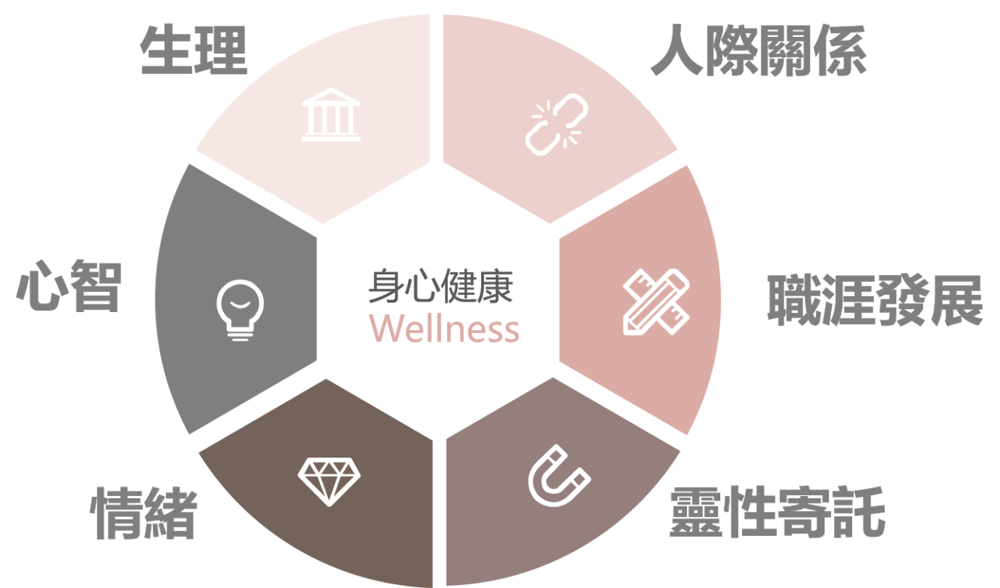

我們是自己身體唯一的主人
人生中的每個面向都是健康組成之一
不只是飲食、運動、睡眠
情緒、思想、工作和社交、心靈成長
都和我們的健康快樂息息相關
美國國家身心健康學會定義身心健康的六大面向
生理(身體)、心智(判斷思考)、情緒、人際關係、職涯、靈性寄託
每個部份其實都隨時有交互作用
如果健康問題只有專注在生理(身體層面)
就常會發現
很多症狀其實沒有一定的原因
尤其是慢性身體問題、皮膚問題、筋骨疼痛…
最終只能歸咎於體質、壓力、環境…
症狀反反覆覆的發生
疲勞、脹氣、皮膚癢、過敏…都影響著我們的生活品質
找不到確切原因的問題更是令人困擾
當我們夠用心照顧
身體也會回應給我們最渴望的健康快樂
但如果有了身心健康的概念
你會發現，問題其實也沒這麼複雜
如果了解到
生活習慣、心理情緒、生活壓力、心靈成長都會影響我們的健康
那我們能做的事情就很多了
舉例來說，
⚡不良的飲食習慣讓腸胃增加身體消化負擔、長期體重上升又增加了個人心理負擔
⚡工作壓力讓身心無法負荷，有慢性疲勞、失眠問題，也更容易導致腰酸背痛、情緒暴躁
⚡沒有精神層命的寄託，了解生命的意義，容易有不曉得在瞎忙什麼的空虛感
容易更依賴他人的關注，無法正視自己的需求、照顧好自己的身體
“ 那些我們不願意面對的事情，往往也才是真正讓我們健康失衡的主要來源 ”
針對上面的例子
改變飲食習慣、培養正確紓壓方式、多探索心靈或哲學相關成長書籍或課程等
都是我們能為自己健康負責的方法，而這也才是根本的解決之道！

🍀 了解身心健康不是教導大眾自己當醫生
而是在心裡把讓自己健康的責任和力量拿回來
醫療人員可以幫助對抗細菌病毒
但無法幫每個人建立強健、有活力的身體
培養良好的壓力管理、正面思考能力
像是培養一棵植物
我們可以施肥、灌溉、細心呵護
長出來的植物自然不需要額外的支架、遮蔭就長的健壯
更能夠面對大自然的風吹雨淋
“ 請像栽培植物一樣用心對待我們的身體 ”
用『健康飲食、規律運動、足夠睡眠』灌溉我們的身體
用『和諧的人際關係、良好的壓力管理、正面思考』為我們的身心施肥